Ce tuto a pour but non seulement de vous apprendre à créer un arbre style cartoon rapidement et efficacement (et il devrait y en avoir pour tous les goûts ^^ ), mais également vous apprendre à utiliser des méthodes de modélisation que vous pourrez tout à fait utiliser dans d'autres types de scène, notamment l'utilisation du "DupliVerts", une fonction parfois bien utile ! ;) Vous êtes prêt(e) ? On est parti !
Avant de commencer notre arbre, il vous faut savoir que ce tuto s'adresse à des débutants et à des confirmés, mais pas à des débutants totaux, je ne retravaillerai pas les bases de blender avec vous. Aerodark a créé un excellent tuto qui vous donnera toutes les bases de blender. Ici, l'essentiel pour pouvoir suivre ce tuto, c'est de savoir comment mettre à l'échelle un objet (le "Scale"), savoir déplacer des sommets et des objets et savoir extruder. Les pré requis sont donc peu nombreux, mais il les faut.
Est-ce que c'est long à faire ton arbre ?
Non. Pour être franc, c'est même très rapide, il suffit simplement d'apprendre à le faire, ensuite vous ferez un arbre en 3 ou 4 minutes maximum.
Ne pourra-t-on faire qu'un arbre exactement comme celui de l'image du tuto ?
Bien sûr que non, sinon la technique que je vous apprends ne servirait pas à grand chose. Vous pourrez créer des arbres comme sur l'icône du tuto, mais aussi des buissons, des arbres aux formes plus rondes comme dans les vieux Zelda de Super Nes, et puis des formes très diverses, allongées comme des peupliers, de gros arbres complexes comme des chênes... Si vous avez du courage, vous pourrez même arriver à quelque chose quittant un peu le cartoon, à l'aide de textures transparentes (il faudra compter un peu plus de temps de modélisation par contre).
De quoi a-t-on besoin pour faire l'arbre ?
Pas besoin de textures particulières, ni de moteur de rendu autre que celui intégré dans blender. Tout ce qu'il vous faut, c'est blender et un peu de passion dans la 3D. ;)
Allez, trêve de bavardages, il est temps de se mettre au boulot :diable: !
Avant de modéliser, il est important de savoir dans quoi on va modéliser, voici donc quelques avant-propos sur l'espace de travail de blender...
Les fenêtres
Donc pour commencer, nous allons nous mettre dans un espace de travail adéquat. Voici le mien, je ne vous demande pas d'avoir le même, je vous demande d'en avoir un qui vous convienne et qui soit pratique ! ;)
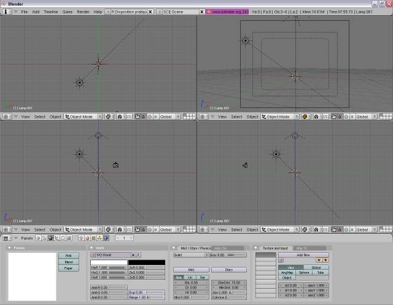
Vous constatez qu'il est composé de trois vues 3D pour une modélisation précise et efficace et une vue caméra pour voir ce que la scène donne. Cette scène est composée de deux lampes : une lumière "Sun" pour avoir des ombres et un effet de soleil, une lumière "Hemi" pour avoir un éclairage global arrivant par le haut. Evidemment on retouchera les lampes, on en rajoutera peut-être et on modifiera leurs options lors du rendu.
Je vous conseille donc de commencer par supprimer l'objet initial de la scène si ce n'est encore fait, il faut mieux ne partir de rien ;) . Ajouter une ou deux lampes comme moi, puis je vous propose de vous diriger vers un nouveau calque pour ne pas être gêné lors de notre modélisation ^^ .
Les calques
Se diriger vers un autre calque ?! o_O
Un calque, c'est une sorte de rubrique dans votre scène, une partie de la scène dans laquelle on ne trouvera donc qu'une partie des objets ^^.
Et ça sert à quoi ?
Il est clair que pour une scène aussi simple, il n'est pas très utile de travailler sur plusieurs calques. Cependant, le but de ce tuto est aussi de vous faire utiliser pas mal de p'tits trucs de blender ^^ .
Je vous conseille donc ici de travailler sur deux calques : le premier calque va contenir, pour le moment, les lampes, la caméra, bref tout ce qu'on n'a pas besoin de toucher pour faire notre arbre, et le deuxième calque va justement contenir notre arbre. L'intérêt : on ne sera pas gêné par des lampes et autres objets lors de la modélisation, on devrait donc mieux s'y retrouver... Vous voyez mieux maintenant l'utilité que ça peut avoir dans une scène plus complexe ? :p
Allez, c'est parti. Vous avez donc dans votre scène, sur votre écran, votre (ou vos) lampe(s), la caméra et... C'est tout ! :p C'est votre calque n°1 ! Pour passer au calque n°2 si vous le souhaitez, vous pouvez :
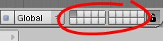
Cliquer sur la deuxième case du tableau d'une des fenêtres des vues 3D :
Appuyer sur la touche 1 (la touche &, pas la touche 1 du pavé numérique !) ; c'est pô plus rapide comme ça ? ^^ conseil perso : utilisez les raccourcis clavier le plus possible !!
Eh oui, maintenant les lumières et la caméra ne vont plus nous gêner, elles sont dans le calque 1 et nous sommes dans le calque 2 :D .
Et si on commençait la partie la plus intéressante, la modélisation ? ;)
Je ne sais pas vous, mais moi j'adore ça, la modélisation ! ^^ Mais vous êtes des zéros, alors ça restera une modélisation relativement simple, et plus c'est simple moins c'est drôle... Quoique... :) C'est parti !
Le tronc
On a donc besoin de créer un tronc, des branches et des feuilles. Oui mais non, on ne va pas créer de branches, et les feuilles, ça sera un feuillage (un paquet de feuilles), nuance ! ^^ (on fait du cartoon rappelez-vous, pas du réalisme).
Et donc pour commencer, on va s'attaquer au tronc ! :diable:
Pour commencer une modélisation, il faut d'abord comprendre ce qu'on va faire ; ici, on devra distinguer sur notre tronc des racines (enfin après nous sommes dans le cartoon, libre à vous de ne pas en faire), et évidemment un tronc.
Au commencement...
Donc pour commencer, tapotez-moi la barre espace (avec votre curseur dans une vue 3D, la vue de dessus de préférence) et faire "Add", puis "Mesh", puis "Cube".
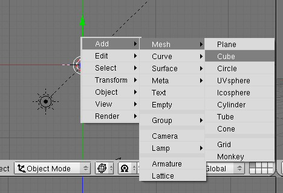
Pourquoi "Dans la vue de dessus de préférence" ?
C'est un peu long à expliquer, disons qu'en faisant ainsi, votre objet n'a aucune rotation au départ. Si vous créez un cube dans une autre vue, l'objet a une rotation initiale, ça ne change rien au rendu mais ce n'est pas très rigoureux... Mais bon ça n'a pas beaucoup d'importance, surtout ici ^^ (mais c'est dès le début qu'il faut acquérir les bons réflexes :) ).
La modélisation du tronc en elle-même
Sélectionnez, en vue de dessus, les sommets de droite (rappel : on sélectionne avec la touche "B"). Si vous pensez n'en sélectionner que deux, sachez que vous sélectionnez bel et bien quatre sommets, c'est à dire toute une face. Vérifiez par vous-même dans la vue 3D ^^ .
Maintenant, pressez la touche "E" pour faire une extrusion. Pressez la touche "Ctrl" en même temps que vous déplacez la souris vers la droite pour déplacer plus précisément vos sommets (ça les déplace d'unité en unité). Une fois que vous les aurez déplacés d'une distance que vous jugerez suffisante, cliquez pour valider le déplacement. Gardez donc ces sommets sélectionnés, on n'en a pas fini avec eux ! :colere2:
On est en train de faire une racine, donc elle va petit à petit diminuer de taille, alors on va réduire un petit peu la taille de la face qu'on vient d'extruder. Avec les quatre sommets toujours sélectionnés, appuyez sur la touche "S" pour mettre à l'échelle (je vous détaille tout mais si vous lisez ce tuto, vous devriez avoir déjà quelques connaissances dans blender non ? ^^ ). Diminuez la taille de votre sélection en bougeant le curseur. Gardez la touche "Ctrl" enfoncée pour avoir quelque chose de précis, et cliquez pour valider. (La touche "Ctrl" pressée, c'est optionnel : ça sert ici uniquement si vous voulez un arbre parfaitement symétrique par exemple, mais rien ne vous oblige à faire quelque chose de symétrique, bien au contraire : c'est à vous de prendre des initiatives).
Bon ben c'est bien joli, mais ça ne ressemble pas à une racine :
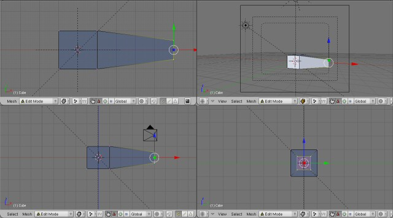
On va encore faire une extrusion : avec les quatre derniers sommets toujours sélectionnés, faites une nouvelle extrusion encore vers la droite de la même façon, nouvelle mise à l'échelle, et vous obtenez ça :
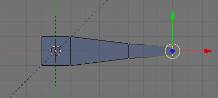
Maintenant, pressez "A" pour désélectionner les sommets, puis sélectionnez les quatre sommets issus de la première extrusion. Une fois les sommets sélectionnés, pressez la touche "G" et déplacez-les vers le haut, avec ou non la touche "Ctrl" enfoncée. N'hésitez pas à déplacer d'autres sommets de la sorte.
Bon beaucoup de texte pour pas grand chose, au final ce n'est pas bien compliqué, alors refaites la même chose avec les trois autres faces du cube du début ^^ . Voici ce que vous devez avoir :
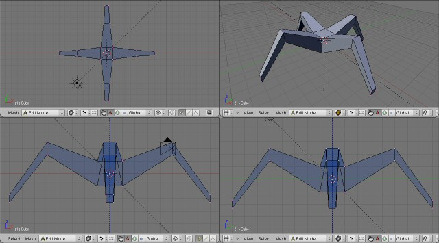
Vous remarquerez que j'ai déplacé les sommets constituant le bout des racines vers le bas, n'hésitez pas à en faire de même pour obtenir un beau tronc... :)
Aller on continue !
Sélectionnez les quatre sommets qui constituent le dessus de notre cube de départ. Pour les sélectionner, passer de préférence sur une vue de côté, car avec la vue de dessus vous prendrez huit sommets, ce n'est pas ce qu'on veut. Extrudez vers le haut, et vous obtenez :
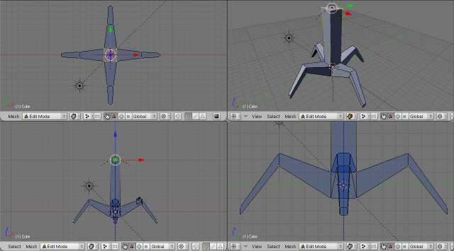
Bon, il nous reste une dernière chose à faire : appuyez sur F9 pour accéder au panel "Editing" (je vous force un peu à utiliser les raccourcis, c'est pour votre bien :D ). Dans la rubrique "Modifiers" (à droite par défaut), cliquez sur "Add modifier" pour ajouter une modification du maillage ; sélectionnez "Subsurf", indiquez un "level" 2 et un "render level" 3. Pour faire (très) simple, le Subsurf (Subdivise Surface, division de surfaces) "lisse" le tronc d'arbre, le "level" définit l'intensité du lissage dans les vues 3D et le "render level" définit cette intensité lors du rendu. Enfin, dans la partie "Link and Materials", cliquez sur "Set Smooth" pour lisser le tronc. Ce dernier est désormais modélisé. N'hésitez pas à le retoucher selon vos goûts. Une dernière chose avant la fin : je vous conseille vivement de nommer votre objet (partie "Link and Materials", le champ "OB") pour mieux gérer votre scène (appelez-le "tronc" pour être original :) ). Une fois terminé, passez en Object Mode (touche Tab) : nous passons au feuillage !
Le feuillage, partie 1
Avant de continuer, il va falloir que je vous dise comment créer notre feuillage. On va créer notre feuillage en deux parties. La première sera une "unité" de feuillage : il s'agira d'une sphère déformée. La deuxième partie sera quant à elle une sorte de "plan" pour assembler plusieurs unités de feuillages entre elles pour avoir quelque chose de bien fourni, un joli feuillage quoi ^^ .
Dans cette première partie, nous allons nous attaquer à l'unité de feuillage. Créez une icosphère (de la même façon qu'on a créé le cube tout à l'heure, mais là il faut sélectionner icosphère ^^ ). Lorsqu'on vous demande combien de subdivisions vous souhaitez, validez deux subdivisions (plus il y a de subdivisions, plus la sphère est divisée en surfaces). Déplacez la nouvelle sphère vers le haut pour être au dessus du tronc ou changez de calque pour que le tronc ne vous gêne pas. Accédez, si vous n'y êtes pas, au panel "Editing" (touche F9) et faites "Fractal" dans la partie "Mesh Tools". Indiquez un fort taux de "rand fac" (50 par exemple) et validez. "Rand Fac" (random factor) est le taux d'aléatoirisme du fractal. Vous venez d'ajouter des sommets à la sphère en les disposant de manière aléatoire. ;)
Maintenant, faites "Smooth" dans la même partie du panel afin de lisser notre sphère.
A quoi ça sert de faire un fort taux d'aléatoirisme pour faire un smooth juste après ?
A avoir quelque chose de plus joli, plus aléatoire, car là tous les sommets auront une position plus ou moins aléatoire, alors que sans le smooth, les sommets d'origine n'auraient pas bougé, donc seulement une partie de l'icosphère aurait été réellement aléatoire. Si vous ne m'avez pas tout à fait compris, ça ne fait rien :p !
Quand vous obtenez une forme adéquate, vous pouvez sortir de l'Edit Mode. Si vous avez modifié la position de l'icosphère en Edit Mode, pensez à faire "Center New" dans la partie "Mesh" du panel "Editing" (F9) pour "recentrer le centre de l'objet" (ce sera utile pour la suite des opérations). Appliquez, comme pour le tronc, un "Subsurf", et n'oubliez pas le "Set Smooth" ensuite. Nommez votre objet (c'est préférable en tout cas). On obtient quelque chose dans ce genre là :
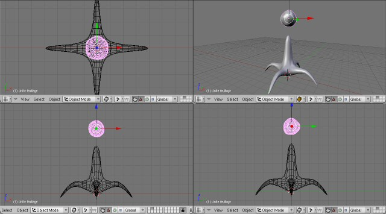
Une fois tout cela fait, on peut passer à la deuxième partie de la modélisation du feuillage.
Le feuillage, partie 2
Cette fois, on s'intéresse à la partie "Plan" du feuillage. Pour commencer, recréez une icosphère, puis refaites un fractal assez important, et un smooth. Cette fois, toujours en ayant tous les sommets sélectionnés, pressez la touche "X" ou "Suppr" ("Del" pour ceux qui ont un clavier rédigé en anglais >_ ) et sélectionnez "Edges and Faces" pour supprimer toutes les faces et tous les côtés. Cette opération n'est pas nécessaire en soi, mais elle permettra en tout cas de mieux distinguer le "plan" de l'"unité de feuillage". ;)
Ensuite, étirez le feuillage en hauteur, à l'aide d'une mise à l'échelle sur l'axe des Z (presser la touche "Z" lors de la mise à l'échelle). Agrandissez également ce fourmillement de points de manière générale (dans toutes les directions si vous préférez).
Désélectionnez tout et pressez la barre espace dans une des vues 3D pour faire apparaître le menu. Allez dans "Select", puis cliquez sur "Random...". Laissez 50 et validez : vous avez sélectionné 50% des sommets. Supprimez-les avec la touche "X" (sélectionnez "Vertices"), ça évitera d'avoir un arbre surchargé au niveau du feuillage. Passez en object mode. Pensez à nommer l'objet (je radote ? c'est pour votre bien, il faut acquérir les bons réflexes :p ). Enfin, faites "Center New" comme tout à l'heure, là encore ça va être utile pour la suite d'avoir des objets bien centrés.
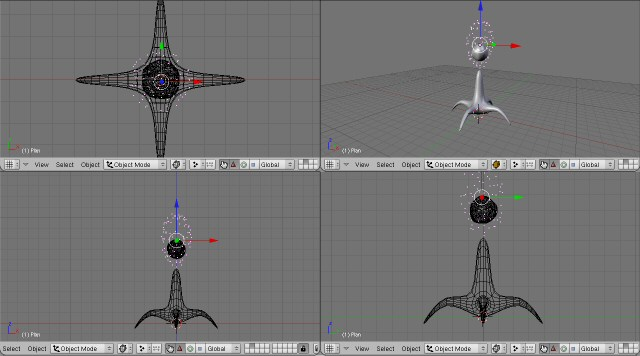
Le feuillage, partie 3
Maintenant, on va utiliser la fonction la plus intéressante du tuto : le "DupliVerts".
Tout d'abord, sélectionnez l'unité de feuillage avec le clic droit, dans l'Object Mode. Ensuite, avec le bouton shift enfoncé, sélectionnez le plan. Le plan doit apparaître en rose clair, l'unité de feuillage en rose foncé. Faites "Ctrl" + "P" et cliquez sur "Make Parents" : les objets sont parentés.
Parenquoi ?
Vos objets sont déclarés père et fils ! :) L'objet père, c'est le plan, le fils, c'est l'unité de feuillage. Si vous bougez le père, donc le plan, l'unité de feuillage le suit. Si vous bougez l'unité de feuillage, le père ne bouge pas.
Sélectionnez l'objet père (le plan) et pressez F7 pour arriver dans le panel "Object buttons" (le panel F7 "Object" contient le panel "Object buttons" ainsi que "Physics buttons" dont on ne se servira pas ici). Dans la partie "Anim Settings" (là où se trouvent tous les boutons qui font peur :euh: ), cliquez sur "DupliVerts", et là, pouf ! il y a un feuillage qui apparaît !
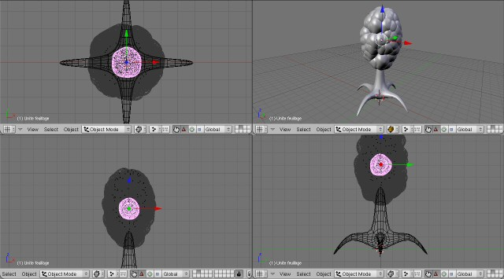
Bon ben ça ressemble déjà beaucoup plus à un arbre là ! N'hésitez pas à modifier la structure du plan et de l'unité de feuillage pour avoir quelque chose d'original et fidèle à ce que vous souhaitez réaliser. ;)
Le sol
Une dernière chose avant d'en finir avec la modélisation : il nous faut un sol. Je ne vais pas m'attarder longtemps là-dessus, ce n'est pas le centre d'intérêt du tuto, alors on va faire simple : créez un plan, agrandissez-le un peu, pressez la touche "W" pour afficher le menu "Specials" et sélectionnez "Subdivise Multi Fractal". Entrez-y une vingtaine de subdivisions et une valeur de quatre environ pour le "Rand Fac" puis faites un smooth ou deux pour avoir un terrain pas trop amoché non plus... ^^
Sortez de l'Edit Mode, nommez l'objet, appliquez un Subsurf, le Set smooth, et le sol est terminé. :)
Adaptez votre arbre au relief en le déplaçant si besoin (ou déplacez le sol) et en changeant la structure du tronc pour qu'il s'adapte bien au sol (on fait du cartoon, mais il nous faut tout de même des bases plus ou moins réalistes non ?).
Mesdames et messieurs, il est temps de passer au texturing, le plus dur et le plus intéressant du tuto est sans doute passé, mais on n'en a pas fini avec cet arbre ! :lol:
Il faut maintenant texturer notre arbre. Le texturing va être très simple, étant donné qu'on veut quelque chose de plutôt cartoon. On ne peut même pas exactement parler de texture pour la bonne raison qu'on va quasiment se limiter aux matériaux. Vous pouvez néanmoins utiliser des textures pour donner un charme à vos ?uvres !
Le tronc et le sol
Pour le tronc, rien de plus simple : sélectionnez le tronc, faites F5 pour accéder au panel des matériaux, puis faites "Add new" pour assigner un nouveau matériau à notre tronc. Pensez à renommer votre matériau, c'est préférable pour mieux s'y retrouver (quoiqu'ici ce n'est pas très important). Changez les couleurs, et dans la partie "Shaders", changez "CookTorr" par "Toon" pour donner un effet cartoon à notre matériau. Ajustez les valeurs selon votre goût !
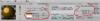Cliquez sur l'image pour voir où se situe tout ça si vous êtes un peu perdu...
Pour le tronc, c'est bon, il n'y a pas grand chose d'autre à faire. :)
Pour le sol, on utilisera exactement la même méthode, il est inutile ici d'utiliser les textures si nous restons dans le cartoon, sauf si vous souhaitez du détail. Ce tuto n'est pas conçu pour vous apprendre à texturer un sol, donc si vous souhaitez avoir quelque chose de plutôt pas mal, faires de l'UV mapping, le tutoriel de FilzonFire pourra nettement vous aider. L'UV mapping est ici intéressant si on souhaite un sol détaillé.
Le feuillage
La technique est exactement la même que précédemment, sauf qu'ici il faut appliquer le matériau sur l'objet fils, l'unité de feuillage, pour que tout le feuillage soit coloré.
Le reste de la procédure est identique, pas besoin d'y revenir. ^^
On peut également ajouter une texture pour le feuillage, si ça vous intéresse. Pour cela, dans le matériau du feuillage, dans la partie "Texture", faites "Add New", renommez votre texture (c'est préférable pour mieux s'y retrouver dans vos scènes) puis appuyez sur la touche F6 pour accéder au panel des textures. Sélectionnez celle qui vous plaît dans la liste (on ne va pas les passer en revue, elles peuvent toutes être utiles selon ce que vous souhaitez en faire) puis cliquez sur l'onglet "Colors" et sur le bouton "ColorBand" pour assigner des couleurs à la texture. Cliquez sur la première barre noire et blanche pour la sélectionner et augmenter la valeur "A" (pour transparence Alpha) à 1. Changez la couleur comme vous le souhaitez. Sélectionnez la deuxième barre noire et blanche et changez la couleur. N'hésitez pas à rajouter d'autres barres noires et blanches à l'aide du bouton "Add" pour affiner les couleurs de votre texture. Vous pourrez déplacer ces barres pour encore plus de précision sur les couleurs.
Retournez dans le panel des matériaux (F5) et dans la partie "Texture", cliquez sur l'onglet "Map Input". Choisissez "Sphere" pour spécifier à blender que la texture s'appliquera sur un objet sphérique (notre unité de feuillage). Dans l'onglet "Map To", vous pouvez activer le bouton "Nor" à côté de "Col" (qui lui est normalement activé) et augmentez la valeur de "Nor" pour que la texture simule du relief (les zones claires de la texture ressortiront davantage que les sombres).
Bon, notre scène est terminée ! ^^ Reste à faire le rendu, on se contentera du moteur de rendu par défaut de Blender : "Blender Internal".
Si vous étiez passé dans le calque 2, sélectionnez tous les objets du calque avec la touche A, puis appuyez sur M et choisissez la première case ou appuyez sur 1 (je vous rappelle : la touche &, pas le pavé numérique) pour renvoyer notre arbre et son sol vers le premier calque. Repassez ensuite dans le premier calque en appuyant une nouvelle fois sur 1. Orientez la caméra selon le bon point de vue (n'oubliez pas qu'en pressant le bouton 0 du pavé numérique dans une vue 3D, vous passez à la vue de la caméra). Vous pouvez (même si je le déconseille car je ne trouve pas ça pas très pratique) déplacer votre caméra à partir de la vue de la caméra : faites Shift + F, "visez" avec la souris, avancez ou reculez avec la molette, validez avec le clic gauche et annulez avec le clic droit.
Accédez maintenant au panel "Scene", partie "Render Buttons", en appuyant sur F10. Dans la partie "Output", enclenchez le bouton "Edge" pour afficher les côtés des objets lors du rendu (effet cartoon). Le bouton "Edge Settings" vous permettra de choisir la couleur de ces contours et l'importance de l'affichage des côtés (vous ajusterez en effectuant plusieurs rendus ;) ).
Pressez F12 pour lancer le rendu. Observez le résultat et ajustez en conséquence la modélisation, les textures, l'éclairage, la prise de vue, les options de rendus... Bref, titillez pour obtenir les meilleurs résultats ! ^^
Bon, le résultat est là, maintenant il faut aller un petit peu plus loin et dépasser le cadre de ce tutoriel pour faire ce dont vous avez envie !
N'hésitez pas à changer la forme de l'arbre, et la forme du "plan", de l'"unité de feuillage" ! Comme je l'ai dit au début de ce tutoriel, vous pouvez créer un arbre avec une unique unité de feuillage et mettre une texture rappelant les arbres de Zelda sur Super Nes, vous pouvez aussi faire un "plan" très très fourni pour avoir un nombre très grand de toutes petites unités de feuillages, et ainsi arriver à quelque chose de plus réaliste (par contre il vous faudra un bon ordinateur :p ). N'hésitez pas non plus à superposer plusieurs couples de "plan" et d'"unité de feuillage" avec des dispositions, des formes mais surtout des textures différentes ! ;)
Une autre idée peut être de faire une unité de feuillage dont la texture représente des feuilles sur fond transparent : la superposition de feuillages de ce type peut donner bien, mais l'utilisation de ce genre de texture n'est pas toujours très simple, ce n'est pas l'objet de ce tutoriel, mais peut-être que ce sera l'objet d'un tutoriel à venir... :p
Vous pouvez aussi, comme moi, ajouter un ciel : pour cela, soit vous passez par le panel F8 et vous créez votre ciel (à l'aide des boutons "Real", "Blend" et "Paper" de la partie preview, puis en changeant les couleurs de la partie "World"), soit vous utilisez une image que vous affichez en fond grâce à la partie "Output" du panel F10 (choisissez l'image souhaitée à l'aide de la petite icône de dossier située à côté du champ de texte "//backbuf" puis activez le bouton "Backbuf" situé en dessous).
Enfin, laissez libre cours à votre imagination ! Ajoutez de l'herbe, faites de l'UV mapping pour le sol, ajoutez des petits oiseaux, bref je ne sais pas moi !
N'hésitez pas à utiliser les autres tutos de la catégorie blender !
Débuter avec Blender, d'Aerodark, le tutoriel de référence pour maîtriser le logiciel et apprendre un paquet de choses :D
UV-Mapping avec Blender, de FilzonFire, pour apprendre à faire l'UV mapping, une technique très pratique de texturing :)
Voilà, je pense avoir fait le tour du sujet, en espérant que vous avez trouvé ce qui vous plaît ! :)
Pour finir, j'ai été ravi de pouvoir faire partager cette technique, j'espère que vous prendrez autant de plaisir pour faire cet arbre que j'en ai eu à partager mes connaissances ! N'hésitez pas à me dire ce qui ne va pas, ce n'est que mon premier tuto et je sais que je ne suis pas toujours très clair dans mes explications... :-°
En espérant vous avoir appris quelque chose, je vous souhaite, amis blenderiens, une bonne mod' !
{kind=link}